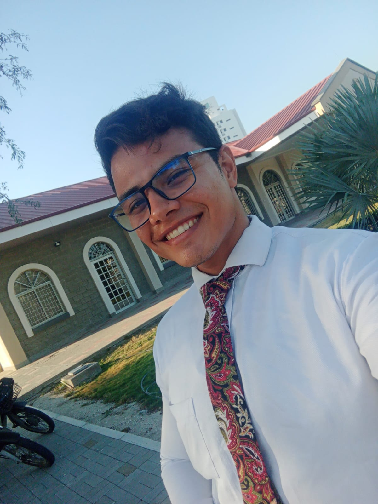

Steven Leon | WDD 130
Hello, my name is Efrain Leon. I am from Colombia. I am 25 years old. I am an environmental and sanitary engineer. I froze my career with BYU pathway for 1 year to finish engineering because I work and study.o I have difficulty starting over and 0, but I hope patiently and with an effort to give the best of me.
I want to get a bachelor's degree in general studies that I can combine with my actual studies in engineer and learn how to create web page and learn more about the digital world and apply it to my knowledge as an environmental engineer
I enjoy spending my time playing video games, reading books of my interest, traveling, and knowing other and new places, I love to go to the gym I have almost one year in the gym.
I'm single and without children
I have been a member of the church forever I mean my parents are sealed in the Lima Peru temple
I am very grateful to pathway for this opportunity of learning
.............................